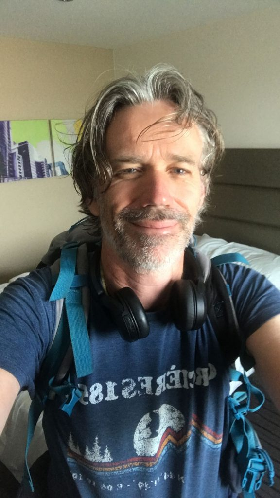

Ian Callen
Director and Co-founder
Ian Callen is the founder and one of the directors of Go Beyond. He has lived in France for over 18 years and has been a qualified teacher since 2007. Ian knows the region extremely well and spends his spare time climbing, walking and photographing the Gorges du Verdon. He also presents a fortnightly radio show local to the area, Radio Verdon, a show that celebrates British music. Ian has also president and founder of, Good Shot, which is a charity which encourages people to get outside with their cameras and highlights the work of local photographers.
Ian worked at The Olive Tree International School teaching photography, horticulture, conservation, biology and astronomy to children with challenging behaviour. In Bristol, England Ian worked for the Brandon Trust, teaching conservation and horticulture to people with learning disabilities. He lives with his wife, Anna, and three children, Joseph, Jasmine and Poppy, in the Provencal town of Manosque.
Ian has a City & Guilds teaching qualification, RHS General and Advanced certificates in horticulture. Ian is trained in First Aid to British Red Cross Standard (January 2019). Ian also has training in Epilepsy and Midazolam, Safeguarding Vulnerable Adults and the Mental Capacity Act.
A Few Questions to Ian Callen
What motivates and inspires you?
To find the beauty or positives in a challenging circumstance or difficult situation. Living here in Provence is very inspiring, the landscape, nature and people that I meet are triggers to new ideas that usually get filtered into Go Beyond somehow. I love working on an idea that I can trace it’s root to the moment it was born. For example, the idea for supported holidays came in the shed/classroom when I was working for the Brandon Trust, teaching at Elm Tree Farm in Bristol. Here we are fifteen years down the line.
What are your strengths?
Obstacles don’t bother me, they only make me more determined to get something finished. I enjoy the struggle to achieve a goal and I love seeing others achieve too, Go Beyond gives me a great platform to help others realise their dreams and goals. We had a client on holiday with us, Ed, a great photographer, who had won awards for his work but couldn’t find anyone to give him wall space for an exhibition. When he was with us, we arranged with a local restaurant owner, Jean Jacques, in Moustiers Sainte-Marie, for an exhibition to take place in his restaurant, Le Belvedere. We had an opening evening, the local press turned up and Ed sold five photos. As you can imagine Ed was a very happy man, and all of this happened whilst Ed was on holiday with us. I love all that, ideas coming from nothing.
What about your weaknesses, where do you need support?
You will probably have to speak to my wife for that one, or the rest of the Go Beyond team. I sometimes get overtaken by an idea, so Anna, my wife, helps me to keep my feet on the ground. I can come across as too serious, but that is usually because I have a lot of things to think about. If that happens, just give me a friendly punch and tell me a joke, I always have time for a joke and that grumpy look will soon disappear.
What is the highlight of working for Go Beyond Holidays?
Without a doubt the people that I spend time with and the environment I spend it in, with them.
Do you have any personal ambitions?
To become a better photographer and write a nature book on the Gorges du Verdon.
Finally, if you were set adrift on a desert island which three albums, three films, three books and one luxury would you take?
For music, very difficult as I would want to take a 100 records with me but I would take, ‘Dragging a Dead Deer Up a Hill’, by Grouper. ‘Green’, by REM and ‘Carrie & Lowell’, by Sufjan Stevens. If I could take a fourth it would be ‘Slowdive’, by Slowdive. My books would be ‘The Pilgrimage’, by Paulo Coelho, ‘Sweet Thursday’, by John Stienbeck and Bram Stoker’s ‘Dracula’. My films are Interstellar, The Secret Life of Walter Mitty and Donnie Darko. A luxury would be my camera.
Meet the rest of the team...A short video from Ian Callen
Go Beyond Holidays is an independent agent for 360 Private Travel. All flights and flight-inclusive holidays on this website are financially protected by the ATOL scheme.
Phone number 00 44 7904 878365
E-mail: kevin@gobeyondholidays.com

Registered Name & Address:
360 Private Travel Limited, 54 High Street, Sevenoaks, TN13 1JG, United Kingdom,
Registration Number: 8512928. Registered in England & Wales
VAT Number: 163818688 ATOL 7514 IATA 91-2 0005 6 Virtuoso Member Number 3251
An independent affiliate of

360 Private Travel is a member of Virtuoso, allowing Go Beyond Holidays access to preferential rates and exclusive benefits at some of the finest hotels around the world.
For Your Financial Protection